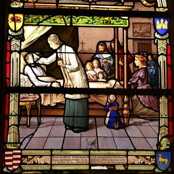
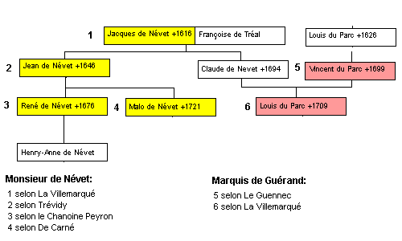

Elégie de M. de Névet
Lament for M. de Névet
par le pauvre Malgan /by the poor Malgan
Dialecte de Cornouaille
|
Les strophes 52 et 53 précisent que la gwerz a été composée par un mendiant ("un pauvre") du nom de Malgan . Ni Luzel, ni Joseph Loth (comme le remarque Francis Gourvil dans une note, p. 402 de son "La Villemarqué") ne rangent ce chant historique dans la catégorie des chants inventés . Compte tenu du message paternaliste qu'elle délivre, on ne peut cependant pas exclure qu'il s'agisse d'une imitation de chanson populaire, création d'un lettré, vendue sous forme de feuille volante selon une pratique qui remonte au 17ème siècle et à laquelle les Jésuite, entre autres, avaient recours. Illustration ci-contre: A Kerlaz, un vitrail de 1916 de Gabriel Léglise montre René de Nevet pleuré par ses vassaux. Il illustre la gwerz du Barzhaz. On y voit la femme du mourant, Anne de Matignon, ses amis, de Carné en bleu et Tréanna en rouge, ses enfants et les paysans. |
 |
Stanzas 52 and 53 give information on the author of the lament: a "poor" (beggar) named Malgan . Neither Luzel nor Joseph Loth (as stated by Francis Gourvil in a note on page 402 of his "La Villemarqué") includes this historical song on the list of the songs invented by La Villemarqué. However, we cannot dismiss the possibility, considering its paternalistic import, of this song being, in spite of its plebeian attire, a scholar's composition sold as a broadside, as was the wont of many Jesuits, among others, since the 17th century. On the opposite picture is a 1916 stained-glass window of Kerlaz church by Gabriel Léglise. It shows René de Nevet whose death is bewailed by his vassals, illustrating the Barzhaz gwerz: the dying gentleman's wife, Anne de Matignon, and friends, de Carné clad in blue and Tréanna in red, his children and the country folks. |
Mélodie - Tune
(Selon indication du "Barzhaz", même air que An Aotrou Nann )
Cependant le texte convient mieux à d'autres mélodies telle que le présent "Ar vinorez a-draon al lann".
However, the lyrics fit better with other tunes, like the present one: "Ar vinorez a-draon al lann"
| Français | English |
|---|---|
|
I
1. - Pauvre homme, qu'est-il arrivé, Que vous soyez si consterné ? 2. Vous êtes vert comme raisin; Mon pauvre homme, écoutez-moi bien; 3. Vous êtes pâle comme un mort; Encore un mauvais coup du sort? 4. - Oh, bien assez tôt vous saurez Ce qui vient de nous arriver; 5. Vous connaîtrez bien assez tôt Quel malheur frappe le château. - 6. Du manoir jusqu'au bourg il vient Un cortège au son du tocsin; 7. Notre recteur marche devant Une bière drapée de blanc, 8. Qui par deux grands bœufs est traînée, Revêtus d'un précieux harnais. 9. Puis vient la multitude immense, La tête inclinée, en silence. II 10. Saint-Jean, le valet, à l'huis Du recteur frappait cette nuit. 11. - Levez-vous, Recteur, à l'instant ! Monsieur de Névet est souffrant. 12. Prenez l'extrême-onction aussi, Le seigneur est à l'agonie. 13. - Me voici, Monsieur de Névet. On m'assure que vous souffrez. 14. J''ai l'extrême-onction avec moi, Qui vous soulagera, je crois. 15. - Pour mon corps je n'espère pas De soulagement ici-bas. 16. Si je n'attends rien pour mon corps, Pour mon âme, quel réconfort!- 17. Après s'être alors confessé, Au vicaire il a demandé: 18. - Ouvrez la porte à deux battants, Que je puisse voir tous mes gens. 19. Ma femme et mes enfants aussi. Qu'ils viennent autour de mon lit! 20. Mes enfants et mes métayers, Mes serviteurs et mes valets. 21. Car je veux que tous soient présents A mon ultime Sacrement.- 22. La dame et ses enfants pleuraient Et tous ceux qui venaient d'entrer; 23. Lui, les consolait calmement Leur parlait comme à des enfants ! 24. - Quittez cette mine éplorée! Dieu est maître des destinées. 25. Petits enfants ne pleurez pas! La Vierge vous protégera. 26. Métayers, pourquoi ce chagrin? Vous, paysans, le savez bien: 27. Le fruit mûr, il faut le cueillir. Quand l'âge vient, il faut mourir. 28. Taisez-vous, braves paysans! Chers pauvres, faites en autant! 29. Si j'ai pris soin de vous toujours, Mes fils le feront à leur tour. 30. Ils vous aimeront eux aussi. Ils feront le bien au pays. 31. Bons chrétiens, assez de sanglots! Nous nous retrouverons bientôt. - III 32. Sire de Carné ce jeudi Matin de la fête de nuit, 33. Sur son cheval blanc revenait Vêtu d'un habit galonné, 34. Tout de velours d'un rouge ardent Et orné de galons d'argent; 35. Ce jeudi, Sire de Carné, En rentrant chez lui demandait: 36. - Pourquoi donc, aucun des Névet A la fête ne s'est montré? 37. Pourquoi n'étaient-ils pas présents? Ils étaient invités pourtant! 38. - Le vieux seigneur, à ce qu'on dit, Est malade et garde le lit. 39. - Cette maladie quelle est-elle? Allons prendre de ses nouvelles. - 40. Lorsque du manoir ils approchent, Ils entendent sonner les cloches. 41. Le porche était tout grand ouvert Et le manoir était désert. 42. - Névet à partir de ce jour, Est au cimetière du bourg. 43. Le feu des morts fut allumé Hier soir, et les pots vidés. 44. Dans la chapelle le recteur Fit rendre à son corps les honneurs; 45. Ses enfants ainsi que sa veuve L'ont fait mettre en sa bière neuve. 46. Voici toute fraîche l'ornière Du char qui le portait en terre. - 47. Et eux de presser leurs chevaux. Au cimetière ils sont bientôt. 48. Quand il furent au cimetière, Leurs cœurs de douleur se brisèrent, 49. Car le fossoyeur étendait Le corps dans la tombe à jamais. 50. La dame en noir, aux yeux de tous, Près de lui pleurait à genoux; 51. Tandis qu'avec des cris affreux Ses fils s'arrachaient les cheveux. 52. Et dix mille en faisaient autant. C'était surtout les pauvres gens. 53. Un d'eux, qui se nomme Malgan, Est l'auteur de ce triste chant; 54. Ainsi veut-il rendre un dernier Hommage au seigneur de Névet, 55. Ce seigneur de Névet si bon Qui fut le soutien des Bretons. Trad. Ch. Souchon (c) 2007 |
I
1. - O my poor man, what happened? Say! You seem to be in great dismay! 2. You are as green as grape, tell me. What is the matter? What could it be! 3. You're, as a corpse, as greyish-blue. O say! What has happened to you? 4. - Early enough, Sir, shall you hear The tale of what has happened here! 5. Early enough hear the sorrow- ful narrative of what I saw. - 6. From manor to gate a long trail Proceeds, to the toll of the bell. 7. The rev'rend parson at the head And before him a bier, white-veiled 8. By two big oxen it is drawn. Harnessed in silver they go on. 9. A long procession behind them With their heads by affliction bent.- II 10. On the same night, servant Saint-John Has knocked at the parson's door. 11. - Get up, get up, Reverend! Quick! For the old Lord Névet is sick! 12. The Extreme Unction, if you please. The old Lord's suffering to ease. 13. - Here I am, at your bedside, Lord. You pain is sour, so I was told? 14. The Extreme Unction I've with me To relieve you, if it can be. 15. - I expect for my body no Relief in this world here below. 16. For my poor body no relief , But for my soul, to my belief. - 17. After confession he had made Now, to the parson he has said: 18. - The door of my room open wide, That none of my heirs stay outside! 19. Let my wife and children take place Around my bed, as a last grace! 20. My children and my croppers all, My servants gathering in the hall, 21. That amidst them I may receive Our Lord when from this world I leave! - 22. The lady and the children cried, As did all those who stood nearby. 23. But solace them did he alone And he told them in a low tone: 24. - Be silent! And don't cry, I say! My dear wife, it's God who holds sway! 25. Keep silent, my dear children, too! The Holy Virgin protects you. 26. My crofters, forget your grief now! For you are country folk and know 27. That, when it's ripe, you glean your rye. When old age has come, one must die. 28. Keep quiet, O my good country folks. To shelter you, dear poor, tall oaks 29. Are standing fast, still, and my sons Shall take care of you later on. 30. As I did, they will love you and They will be helpful to the land. 31. O don't cry, good Christians, don't cry. We'll meet again when time has gone by! - III 32. When from the night feast Lord Carné Came back home early on Thursday, 33. Upon his tall white horse he rode, Proudly accoutered, on the road, 34. His velvet coat, like fire red, With silver stripes all over spread, 35. Early this Thursday Lord Carné Asked, as he was still on his way: 36. - Gentlemen, why did the Névets Not partake in the night feast? Say! 37. All of them, absent from the feast Though widely was the news released ! 38. - The old Lord, I was told, lies still In his bed and is very ill. 39. - If the old Lord lies ill in bed, Let us make sure that he's not dead.- 40. When to his manor they draw near, The dull toll of the bells they hear. 41. Wide open was the outer gate And inside no one was in wait. 42. - If you have come to see the Lord, You'll find him in the town's churchyard. 43. Yesterday the fire of the dead Was lit on. All the water shed. 44. Trestles by order of the priest For him were set up facing east. 45. The Lady and her children here Have buried him in the new bier. 46. Here are the fresh ruts of the cart That carried him to the churchyard.- 47. And they have spurred their horses on And to the churchyard they are gone. 48. When in the churchyard they arrived, They felt their hearts rent at the sight: 49. As they saw how the digger man To close his grave forever began. 50. Sobbing, upon her knees, behind, The lady clad in black they find. 51. The children, too, were wailing there Were mad of grief and tore out their hair. 52. Ten thousand people did as much, Mostly the parish poor and all such. 53. One of them, whose name is Malgan Has composed this lamenting chant. 54. This dirge he composed on that day In honour of the Lord Névet 55. The blessed Lord who would impart, Bretons, to you his kindness of heart. Transl. Ch. Souchon (c) 2012 |
Vers le texte breton
To the Breton text
.


|
Résumé
Un exemple d'attachement des paysans bretons à un aristocrate local aux funérailles duquel assistèrent dix mille personnes. Ces funérailles furent menées selon des rites propres à la Basse-Bretagne. L'identité de Monsieur de Névet Le problème que pose l'identification de ce personnage est est de concilier les indications fournies dans la gwerz avec ce qu'on sait d'un personnage historique: Il s'agit: - d'un homme âgé, - connu pour être très charitable, - qui a une femme et des enfants, les uns tout jeunes, les autres en âge de s'occuper des pauvres; - qui meurt dans le château des Névet ("maner", de Névet-Lézargan en Plonévez-Porzay); - qui fut enterré au cimetière du bourg voisin et non dans l'église, - à une époque de l'année où l'on donne des fêtes de nuit ce qui exclut le carême, On peut éliminer tous les seigneurs de Névet qui vécurent avant ou après le XVIIème siècle (trop jeunes, morts en duel, célibataires, etc.). Outre qu'il n'avait pas la réputation d'être spécialement charitable, ce personnage fut d'ailleurs enterré dans l'église de Locronan, non au cimetière. René de Névet (1641-1676) Ce René, fut l'objet, de la part de M. de Tréanna, son compagnon de retraite de Carême chez les Jésuites en 1676, d'un véritable canevas de procès en canonisation . Il était Lieutenant du roi et colonel de la cavalerie de l'Evêché de Cornouaille, d'une grande piété et d'une charité exemplaire pour ses vassaux. "Pour ses sujets: il [leur] servait de père, son dessein c'est de les rendre les plus aisés du pays, couvrant cette charité paternelle du prétexte qu'un seigneur n'est jamais mieux payé de ses vassaux que lorsqu'il les a mis dans la facilité de le payer de terme en terme. Lorsqu'il ne pouvait avoir le paiement qu'en les incommodant, il leur demandait du travail au lieu d'argent. (Henry Ford dira aussi quelque chose dans ce goût-là et personne n'a songé à le canoniser...) Il mourut à Névet-Lezargan le 13 avril 1676, laissant deux enfants (3 et 5 ans), huit jours après Pâques et fut enterré dans son caveau près du grand autel de l'église de Locronan. Malo de Névet (1645-1721) Le second frère qui pourrait être le héros de l'élégie est Malo, le dernier des dix enfants de Jean de Névet. Né en 1645, il avait fait ses études chez les Jésuites à La Flèche. Il fut tenté par la vie érémitique et fonda une sorte d'hospice sur le sommet de la colline qui domine 'Plas-ar-C'horn', pour servir d'asile aux pèlerins de la Troménie de Locronan et de Sainte-Anne de la Pallud. C'est là qu'il vécut. Lorsque le fils de son frère René mourut en 1699, ses nombreuses sœurs le supplièrent de sacrifier ses goûts à la sauvegarde du nom de la famille et il consentit à se marier. Cinq ans se passèrent, sans que naisse un enfant. A défaut il adopta le fils d'une de ses sœurs, puis il reprit sa vie de solitaire. Pourtant, le 2 juillet 1717, alors qu'il avait 71 ans, sa femme mit au monde une fille. Il fut décidé que celle-ci épouserait à 12 ans son cousin, le fils adoptif de Malo, lequel après avoir prit ces dispositions mourut le mardi de la Semaine sainte, le 8 avril 1721. L'enterrement eut lieu à Locronan, avec une nombreuse assistance et grand concours de pauvres qui lui étaient redevables de la fondation de l'hospice de Plas-ar-C'horn et des rentes pour y entretenir douze orphelins de la paroisse de Plogonnec. De plus il avait ordonné de distribuer 5 sols à tous les pauvres qui assisteraient à ses obsèques! Selon G. de Carné la seule contradiction qui reste à résoudre, cette famille nombreuse que la gwerz lui attribue, s'explique par le fait que le mendiant Malgan qui composa le chant était un itinérant et qu'il était insuffisamment informé. Il ajoute que le De Carné qui vint visiter Monsieur de Névet ne peut être que Guy François qui habitait au château de Kerliver à 11 lieues de Locronan, car les deux hommes avaient passé ensemble un acte le 17 février 1719. Le point de vue de M. Le Guennec La cause semble donc entendue. Compte tenu de l'âge du personnage à sa mort, 76 ans, l'Elégie du Barzhaz ne peut s'appliquer qu'à Malo qui laissait une épouse et deux enfants, une petite fille et un fils adoptif d'une vingtaine d'années. Toutefois, M. Le Guennec opte pour René, car une difficulté demeure en ce qui concerne Malo: sa mort tombe en pleine Semaine sainte, circonstance qui exclut que son voisin (de 11 lieues!), M.de Carné ait pu se rendre à une fête de nuit. Il n'en reste pas moins que l'on voit mal un père de 35 ans désigné par l'expression "an aotroù kozh" ("le vieux seigneur", strophe 12). L'expression aurait pu, à la rigueur, viser à distinguer le père de ses fils, si ceux-ci avaient atteint l'âge adulte ou en étaient proches. On le voit mal également parler de lui-même en disant: "quand le blé est mûr, on le moissonne. Quand l'âge vient, il faut mourir" . Et on sait par ailleurs que sa femme n'assistait pas à son décès. M. Le Guennec résout cependant la difficulté: il est de ceux qui, même avant les travaux de M. Donatien Laurent, croyait que l'illustre ancien président de La Société archéologique à laquelle lui-même appartenait n'avait inventé aucun des chants qu'il avait publiés. Il en conclut donc que La Villemarqué "a réellement découvert quelques lambeaux d'une gwerz ancienne sur la mort d'un seigneur de Névet, probablement de ce René, Marquis de Névet qui ... était ... le père de ses vassaux", et qu'il "refondit ... développa et transforma ... la rapsodie du 'chercheur de pain' Malgan" , quitte à y ajouter des détails qui ne cadrent pas avec les données historiques. Il s'agit en particulier de cet enterrement paysan dans une charrette traînée par deux bœufs qui conduit au cimetière d'une bourgade un noble dont l'enfeu de ses ancêtres orne le chœur de la collégiale de Locronan, et dont on peut encore lire l'épitaphe. Le duel Névet-Guémadeuc En revanche M. Le Guennec pense pouvoir affirmer que deux chants collectés par Luzel et publiés dans le tome 1 des Gwerzioù ont bien trait à un seigneur de Névet: il s'agit de "An Aotroù Rosmadek" et "Rosmadek ha Baron Huet" . Ce dernier nom doit se lire "Névet" et le chant correspondant relate la mort en duel, en 1616, du Baron Jacques de Névet (n°1 du tableau ci-dessus), le grand-père de René et le beau-père du marquis de Guérand, Vincent du Parc du chant précédent, que sa fille Claude épousa en secondes noces en 1643. C'est à cette occasion que ses serviteurs auraient apporté l'histoire en Trégor et que les chanteurs locaux auraient déformé le patronyme "Névet" en "Huet", et celui de l'adversaire au duel, un Guémadeuc , des évêchés hauts-bretons de Rennes et Saint-Malo, en "Rosmadec", noms bien connus dans les régions de Guingamp et Morlaix. On remarquera en se rapportant à ces chants les réminiscences d'autres chants qu'ils contiennent: . Merlin Barde . La gwerz des Aubrais de la Collection de Penguern , 1ère strophe (sujet de la dispute) Le fait historique raconté par Louis Le Guennec. "Voici le fait dont s'est inspiré l'auteur de la gwerz: ...En 1616, Jacques, baron de Névet, chevalier de l'Ordre du Roi, capitaine de 50 hommes d'armes d'ordonnance, gouverneur du Faou et de Douarnenez, s'était rendu aux Etats de la province réunis à Rennes sous la présidence du maréchal de Brissac. Une question de préséance le mit en conflit avec Thomas de Guémadeuc, vicomte de Rezay,... gentilhomme de la Chambre du Roi et gouverneur de Fougères. Un duel s'ensuivit où le baron de Névet succomba le 28 octobre 1616, traîtreusement frappé par son adversaire qui s'enfuit aussitôt et alla s'enfermer au château de Fougères. Aux Etats, l'indignation était générale contre l'assassin: le maréchal de Brissac conduisit la noblesse au siège du refuge de Guémadeuc. Le roi lui-même s'en mêla. Il dépêcha au coupable un exempt des gardes du corps chargé de conduire le gouverneur à Paris. Guémadeuc obéit d'abord, rendit la place et suivit l'exempt. Mais bientôt..., il quitta furtivement la capitale et retourna se barricader à Fougères... Il fut prit par surprise et dut regagner Paris sous bonne escorte et fut emprisonné à la Conciergerie. Une sentence terrible termina son procès... Malgré les supplications de la baronne de Guémadeuc, sa tête tomba le 27 septembre 1617 sous la hache du bourreau. ...La légende s'empara de la tragédie...On ne voulut pas y voir l'acte sévère d'un monarque frappant un sujet rebelle. On préféra raconter que le fils de la victime avait, à peine adolescent, vengé son père en tuant le meurtrier". Cet événement est le sujet du chant collecté par Mme de Saint-Prix: Baron Nevet hag ar Gimadek" . L'aristocratie an Bretagne. A propos de ce chant, le Vicomte Hersard de La Villemarqué, cite Augustin Thierry: "Les gens du peuple en basse Bretagne n'ont jamais cessé de reconnaître dans les nobles de leur pays des enfants de la terre natale; ils ne les ont point haïs de cette haine violente que l'on portait ailleurs à des seigneurs issus d'une race étrangère. ... Le paysan breton leur obéissait avec zèle ... avec le même dévouement qu'avaient pour leurs chefs de tribus les Gallois et les montagnards d'Ecosse. " Si l'image du noble dans le Barzhaz est "globalement positive", comme disait un politicien d'autrefois à propos du bilan de l'URSS, on ne saurait en dire autant de celle véhiculée dans les textes collectés par Luzel. Même si l'on peut supposer, connaissant ses convictions, qu'il ait fait exprès de noter les récits qui ne présentent pas les nobles sous leur meilleur jour, il est de fait que sur les quelque 80 gentilshommes mis en scène dans ses "Gwerzioù" et ses "Sonioù", selon le Guennec ("La Légende du Marquis de Guerrand et la Famille du Parc de Locmaria", in "Bulletin de la Société archéologique du Finistère", tome 55, 1928, P.15), "une douzaine tout au plus y tiennent un rôle honorable, justiciers, défenseurs du faible, âmes charitables et compatissantes" . Quant aux autres, 45 d'entre eux (57%) sont des assassins, des suborneurs, des voleurs ou des imbéciles. En privilégiant cette vision "statistique", on tombe certainement dans l'excès inverse, car le genre de la complainte porte les auteurs à se concentrer sur les situations dramatiques et non sur l'expression de revendications sociales. La mort donnée en spectacle Plusieurs détails dans ce récit d'une mort théâtrale ont été décrits par La Villemarqué dans les "notes" qui suivent "Le frère de lait . En voici quelques extraits: "Dès qu’un chef de famille a cessé de vivre, on allume un grand feu dans l'âtre, on brûle sa paillasse, on vide les cruches d’eau et de lait de sa demeure (de peur, dit-on, que l’âme du défunt ne s’y noie). Il est enveloppé de la tête aux pieds d’un grand drap blanc : on le couche sous une tente funèbre, le front tourné vers l’orient; on place à ses pieds un petit bénitier, on allume deux cierges jaunes à ses côtés, et on donne ordre au bedeau ou au fossoyeur, d’aller porter « la nouvelle de mort. » Cet homme va de village en village vêtu, en Tréguier, d’une dalmatique noire semée de larmes, agitant une clochette et disant à haute voix : « Priez pour l’âme qui a été un tel ; la veillée aura lieu tel jour, à telle heure ; l’enterrement le lendemain. » De tous côtés, vers le coucher du soleil, on arrive au lieu indiqué... Lorsque la demeure est pleine, la cérémonie commence : on récite d’abord les prières du soir; puis les femmes chantent des cantiques... A minuit, on passe dans l’appartement voisin, où le « repas des âmes » est servi. Le mendiant s’y assoit a côté du riche : ils sont égaux devant la Mort. Au reste ... le pauvre est toujours associé aux douleurs comme aux plaisirs de tous, en Bretagne ; il a sa place à la table de mort, comme au banquet des noces. Au point du jour, le recteur arrive, et tous se retirent, à l'exception des parents, en présence desquels le bedeau cloue le défunt dans la châsse. Aucun membre de la famille, ne doit manquer à ce solennel adieu. On charge ensuite le mort sur une charrette attelée de bœufs. Le clergé, précédé de la croix, ouvre la marche; ensuite vient le corbillard, que suivent la veuve et les femmes en coiffes jaunes et en mantelets noirs plissés, deuil des paysannes, et les autres parents, la tète nue et les cheveux au vent. On se dirige ainsi vers l’église du bourg, où l’on dépose la bière sur les tréteaux funèbres. La veuve reste agenouillée près de son mari pendant toute la cérémonie, et ne se relève que pour le suivre au cimetière. Sitôt que l'on entend le bruit sourd que rend la châsse en tombant dans la fosse, un cri déchirant part de tous les cœurs ; souvent la veuve et ses enfants veulent s’élancer après elle ; les hommes se jettent a genoux, en voilant leurs visages de leurs longs cheveux, comme ils le font en signe de deuil..." Une étrange pratique Concernant la curieuse pratique relative aux cruches vidées , le Chanoine Peyron, dans l'article déjà cité, en donne une interprétation inspirée par l'orthodoxie chrétienne. Il indique que cet usage a été signalé par Brizeux dans ses "Derniers Bretons", à l'occasion de la mort du roi Hoël: "Prenez garde surtout que mon âme se noie: Videz tous las bassins, tous les seaux, tous les muids..." Il est persuadé que cet usage était une reproduction du rite liturgique qui veut que le Vendredi-Saint, on vide les bénitiers de l'église, qui ne seront remplis à nouveau que le Samedi-Saint après qu'ils auront été sanctifiés par le contact du cierge pascal, symbole du Christ ressuscité. |
Résumé
An instance of mutual respect between country folks and local gentry in Lower Brittany. Ten thousand people came to a nobleman's funeral, held according to rites in use only in this area. Monsieur de Névet's identity The puzzling point in this inquiry is how to make historically ascertained facts tally with the information provided in the song, which is about: - an old man, - widely known as charitable, - with wife and children, part of them are infants, others old enough to be in charge of the poor, - who died at the mansion of the Névets (Névet-Lézargan Manor near Plonévez-Porzay"), - and was buried in the churchyard of the nearby village, not in Locronan church, - at a time of the year when night feasts may be held, i.e. not in Lent time. All the lords Névet who lived before or after the 17th century may be crossed off the list since, when they died, they were too young, not married, fighting a duel, etc...) Last but not least, he was buried in Locronan Church, not in a churchyard. His view of the song is that it is about either of two brothers, René and Malo de Névet whose outstanding saintliness and charity qualified the name Névet for half a century of veneration. René de Névet (1641-1676). René de Névet's merits were extolled by M. de Tréanna, who took part with him in a Lent retreat at the Jesuit retreat house in La Flêche, in 1676, and wrote what appears to be a framework notice for a canonization process . René was Lieutenant of the King, and a cavalry colonel for the Quimper bishopric, of outstanding piety and ardent kindness for his vassals. Le Guennec writes: "As to his subjects, he was [for them] like a father. He was anxious to make them better-off than their neighbours. He strove to hide his paternal solicitude, giving as a pretext that a lord's rent never is so well paid, as when he keeps his vassals in a position of paying each instalment falling due. Whenever exacting the sums due would have put them to too great inconvenience, they were allowed to pay in work, instead of money. (Henry Ford said something similar, but nobody thought of canonizing him...) He died at Névet-Lezargan manor, on 13th April 1676, eight days after Easter Sunday and left behind two children aged 3 and 5. He was buried in his family vault near the high altar in Locronan church. Malo de Névet (1645-1721) The other brother who also could qualify for featuring in the lament is Malo, the last of Jean de Névet's ten children. He was born in 1645 and studied at the Jesuit college at La Flêche. He strove to live an eremitic life and founded a sort of poorhouse on top of the hill over 'Plas-ar-C'horn' that could also harbour pilgrims to the Locronan Tromeny and Sainte-Anne-de-la-Pallud. He lived there. When his brother René's son died in 1699, his countless sisters entreated him to sacrifice his own tastes and inclinations to save the name of their family and he accepted to marry. Five years went by and no child was born. Therefore he adopted, as his own son, the son of one of his sisters, and took up again his life of solitude. Yet, on 2nd July 1717, when he was 71, his wife gave birth to a daughter. It was decided that the latter would marry, when she would be twelve, her cousin, the fosterson of Malo, who, after these provisions were made, died on 8th April 1721, the Tuesday of the Holy week. The burial at Locronan was attended by a large concourse of people, especially by poor who had been accommodated, at some time or other, at Plas-ar-C'horn hospice or had got a pension from the funds intended for twelve orphans of the parish Plogonnec. Besides, his testament specified that a gift of 5 shilling should be made to the poor who would attend his burial! According to G. de Carné, there remains only one contradiction to be solved: the large family he is credited with by the ballad. In his opinion, it just points out beggar Malgan as a wandering bard who was insufficiently conversant with the matter at hand. He also states that the De Carné who visited Monsieur de Névet could be no other than Guy-François de Carné, who lived at Kerliver manor, some eleven leagues away from Locronan, since both their names appear on an agreement passed on 17th February 1719. M. Le Guennec's view of the problem. It looks now as if the problem were solved: In view of the hero's age when he died, 76, the Lament can only apply to Malo who left behind a wife and two children, a little girl and a fosterson aged twenty or so. And yet, M. Le Guennec decides for René, as there is still a difficulty concerning Malo: his death occured right in the middle of the Holy Week. This circumstance excludes that his neighbour (11 leagues!), M. de Carné, could have been returning from a night feast, when he heard of his death. However, it is difficult to assume that René, a 35 year old man could be called "an aotroù kozh", the "old lord", in stanza 12. There would have been a faint possibility that the phrase aimed at distinguishing the old lord from the young lord, his son, if the latter had been of age or near being of age. But he would hardly have said, speaking of himself: "when the wheat is ripe, it must be reaped. When one grows old, one must die." Besides, his wife was, reportedly, not present when he died. M. Le Guennec, even before M. Donatien Laurent had published his study, was convinced that the former President of the Archaeological society a member of which he was, (i.e. La Villemarqué), invented none of the songs he published in his book. He inferred that the Bard "did really come across some shreds of an old gwerz on the death of a Lord Névet, who is likely to be the said René, Marquess of Névet (1641 - 1676) , since he was known to be ... a father to his subjects. He recast, ... developed and transformed the rhapsody of beggar man 'Malgan'" , but indulged in adding details that don't fit historical data; in particular, this country burial with a hearse, drawn by two oxen, carrying to a village churchyard a nobleman who had a burying place of his own inside the collegiate church of Locronan, where one may still make out his epitaph in the choir. The duel Névet vs. Guémadeuc On the other hand, M. Le Guennec, thinks he has a right to say that two songs, collected by Luzel and published in book 1 of his "Gwerzioù", do refer to a Lord Névet, to wit "An Aotroù Rosmadek" and "Rosmadek ha Baron Huet" . The latter name should be read "Névet" and the song recounts the deadly duel fought in 1616 by Baron Jacques de Névet (# 1 in above table), who was René's grandfather and father-in-law to the marquess of Guérand, Vincent du Parc featuring in the previous song. The latter was the second husband to Claude, Jacques' daughter, whom he married in 1643. This marriage gave the staff of servants an opportunity to "export" the story to Trégor where local singers changed the locally unknown name "Névet" to "Huet" and that of his opponent, Guémadeuc , a well-known name in the French-speaking bishoprics Rennes and Saint-Malo, to "Rosmadec", a popular name in the Guingamp and Morlaix areas. A striking feature of these songs are the reminiscences they contain: . Merlin the Bard (stanzas 83 with 85) . The Gwerz 'Des Aubrais' in the Penguern collection , (1st stanza: reason for the quarrel). The historical occurrence recounted by Louis Le Guennec "Here is the event that inspired the author with his ballad: ... In 1616, Jacques Baron du Névet, chevalier of the King's Order, captain of a company of 50 men, governor of the Faou and Douarnenez fortresses was a representative to the Estates of Brittany held in Rennes under the presidency of field-marshal de Brissac. A quarrel arose, over a question of precedence, between himself and Thomas de Guémadeuc, viscount of Rezay, ... nobleman of the King's Chamber and governor of Fougères. They fought a duel and Baron de Névet was treacherously slain by his opponent who took to his heels and shut himself up in his Fougères stronghold. At the Estates, everybody condemned this indecorous behaviour: field-marshal De Brissac and the nobility laid siege on Fougères Castle. The king himself felt prompted to act. He sent to the culprit an "exempt" of his bodyguard who was to accompany him to Paris. At first, Guémadeuc obeyed. He surrendered and followed the exempt. But then ... he stole away from the capital and barricaded himself in Fougères. ... Eventually, he was caught by surprise and dragged back to Paris, where he was imprisoned in the Conciergerie jail. His trial ended up in a terrible sentence ... In spite of his wife's supplication, he was beheaded on 27th September 1617. ... Legend laid hold of these occurrences ... The strict punishment of a subject that could not be reclaimed to loyalty by his monarch, was changed into a tale of a victim avenged by his son, as soon as the latter is able to wield a sword." This episode is addressed in a song collected by Mme de Saint-Prix: Baron Nevet hag ar Gimadek" . The Breton aristocracy In connection with this song, Viscount Hersard de La Villemarqué quotes the historian Augustin Thierry: "Ordinary people in Lower Brittany always have considered the nobles of their country as children of their own motherland. They never hated them, as others did violently hate rulers descended from foreign races ... The Breton peasant would obey them as readily and devotedly as did country folks of Wales or of the Highlands of Scotland obey their own chieftains." If the image of the noble is, in the Barzhaz, "positive, when taken as a whole", as a French politician used to say, when speaking of the USSR, this is by no means the opinion conveyed by the texts gathered by Luzel. Even if we may assume, knowing his political creed, that he made a point of not showing the aristocracy from a favourable point of view, we cannot deny that of the ca 80 noblemen featuring in his "Gwerzioù" and "Sonioù", "at the most a dozen or so play an honourable part in the stories, as dispensers of justice, defenders of the weak, charitable and compassionate souls." Among the others, we find 45 (57%) murderers, seducers, thieves or idiots. However, with this statistical approach, we are sure to go on the opposite extreme, since we don't take into consideration, that authors of ballads tend to concentrate on dramatic plots, rather than on the expression of social resentment. Death as a show Several details in this record of a death staged as a show, are to be found in La Villemarqué's notes to the song "The foster brother" . Here are a few excerpts: As soon as a head of family has ceased to live, a big fire is kindled in the fireplace, where his straw mattress is burnt; all jugs in the house are emptied of their contents of water or milk, (lest , allegedly, the deceased soul could be drowned in them). They wrap him from crown to feet in a large white shroud, and lay him under a funerary canopy, with his head facing east and a little stoup at his feet. Two yellow candles are lit on his sides and the beadle, or the gravedigger, is sent out to broadcast "the news of death". This man goes from town to town, clad, in Trégor, in a black chasuble dotted with white tears, ringing a bell and loudly imploring: "Pray to God for X! We will hold a wake over his remains on such-and-such a day, at such-and-such a time and bury him the following day." From all sides, towards sunset, all converge on the heralded place ... When the house is full, the ceremony begins: first, they recite the evening prayers, and then women sing hymns... At midnight, they go to the adjoining room where the "meal of the souls" is ready. There, the beggar and the rich man sit side by side: all people are equal in front of death. Besides... the poor is always asked to partake in the celebrations of weal and woe in Brittany, be it at funerals or at weddings. At sunset the vicar arrives, and all withdraw except the parents whose attendance is required when the beadle closes the bier into which the deceased was laid. No member of the family dares shun this solemn farewell. The corpse is then loaded on a cart drawn by oxen. The clerics, preceded by a crucifix, walk ahead of all; then comes the hearse followed by the widow and the women with saffron-coloured headdresses and black pleated short capes as a sign of mourning; then the men, bare-headed, with their hairs hanging loose. The procession heads for the town church, where the coffin is laid on the trestles. The widow remains kneeling near her husband during the whole duration of the ceremony, until she rises to follow him to the churchyard. Then the coffin falls in the grave with a thump, raising from all throats a rending cry. The widow and the children make a pretence of throwing themselves into the pit; men kneel down and bury their faces under their long hairs, as they often do as a sign of mourning..." A strange wont Concerning the strange habit of emptying the jugs , Canon Peyron, in the article mentioned above, gives an interpretation based on Christian orthodoxy. He states that this custom was already pointed out by Brizeux, in his "Last Bretons", when he recounted king Hoël's death: "Take care, above all, lest my soul be drowned: Empty all basins, all buckets and all troughs! " He is convinced that this wont paralleled a liturgical Good Friday rite: on that day, all stoups in the church are emptied, and filled again on Good Saturday, once they were hallowed by the contact of the Paschal candle, the symbol of risen Christ. |